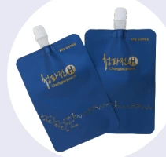
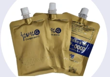
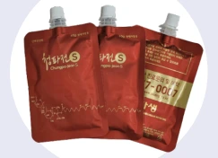
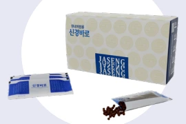
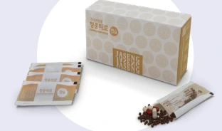
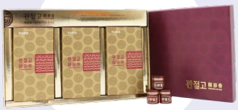
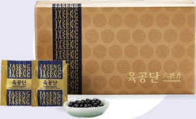
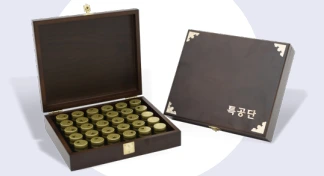
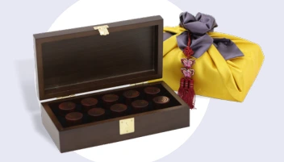

척추·관절 치료 한약
청파전-H
척추관절질환을 위한 자생 고유 처방입니다. 항염증, 뼈 강화, 신경 재생, 연골·척수 신경 보호, 척수 조직 염증 감소, 운동·보행능력 회복을 목적으로 소개됩니다.

청파전-G
혈액순환 개선과 뼈·근육·인대 손상 완화를 위한 처방입니다. 항염증과 뼈·신경·연골·척수 신경 보호, 기력 강화, 근육·인대파열 및 척추디스크·협착증·만성퇴행성 질환 예방을 목적으로 소개됩니다.

청파전-S
진통·소염작용을 통한 근육·신경·관절 통증 완화를 위한 처방입니다. 항염증과 뼈·신경·연골·척수 신경 보호, 근육통·신경통·요통·관절염 완화, 어깨 견관절통·회전근개 파열·급만성 통증 예방을 목적으로 소개됩니다.

신경바로(환)
척추관절 주변 퇴행화된 뼈·신경의 재생을 위한 처방입니다. 염증·부종 완화, 손상 신경 재생, 뼈·연골 강화와 허리·목·퇴행성 디스크 및 척추관절질환 예방을 목적으로 소개됩니다.

청웅바로(환)
염증·부종 제거, 통증 감소와 손상된 뼈·신경·연골 재생, 추간판 탈출증·척추관협착증 등 척추관절질환 예방을 목적으로 소개됩니다.

관절고
연골의 재생·보강과 보호, 관절파괴 억제, 통증 완화 및 퇴행성 관절염 예방을 위한 처방입니다. 손·목·팔목·어깨·무릎 관절염 예방을 목적으로 소개됩니다.

보약
육공단
허약체질 개선과 기억력 감퇴 예방을 위한 보약입니다. 기억력 증진, 스트레스 개선, 근육강화, 면역력 향상, 원기회복과 만성피로 해소를 목적으로 소개됩니다.

특공단
원기 보강과 스태미나 강화를 위한 보약입니다. 간·뇌세포 보호, 중풍·심장질환 예방, 피로해소, 혈압 강하를 목적으로 소개됩니다.

사향공진단
노년기 혈관질환과 치매 예방을 위한 보약으로 소개됩니다. 심장·신장 기능 강화, 원기회복, 심근경색·뇌경색 예방, 면역력 향상, 만성피로 해소, 독소해독과 스태미나 보강이 설명되어 있습니다.
